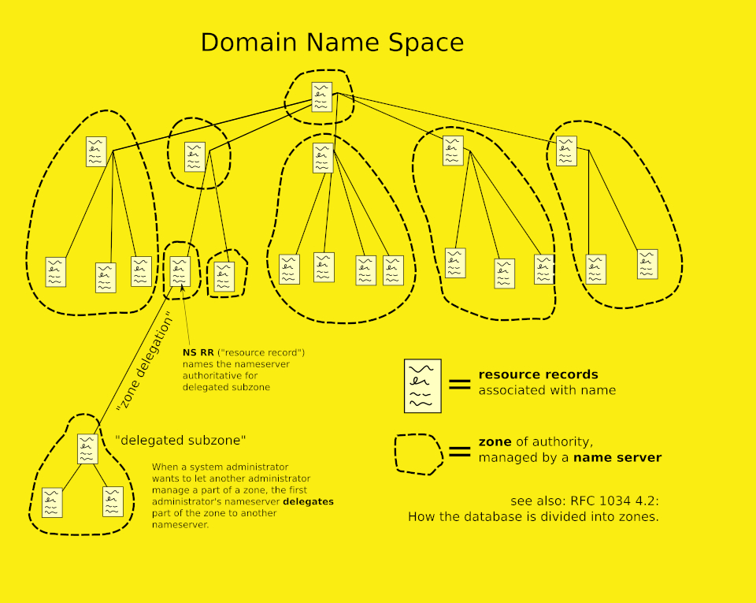

Mikołaj Cichocki 257272, Szymon Machała 257281 All rights reserved 2026
The Domain Name System (DNS) is the phonebook of the Internet. Humans access information online through domain names, like nytimes.com or espn.com. Web browsers interact through Internet Protocol (IP) addresses. DNS translates domain names to IP addresses so browsers can load Internet resources.
A top-level domain (TLD) is one of the domains at the highest level in the hierarchical Domain Name System of the Internet after the root domain. The top-level domain names are installed in the root zone of the name space. For all domains in lower levels, it is the last part of the domain name, that is, the last non-empty label of a fully qualified domain name.
The domain name space consists of a tree data structure. Each node or leaf in the tree has a label and zero or more resource records (RR), which hold information associated with the domain name. The domain name itself consists of the label, concatenated with the name of its parent node on the right, separated by a dot.
The tree sub-divides into zones beginning at the root zone. A DNS zone may consist of as many domains and subdomains as the zone manager chooses. DNS can also be partitioned according to class where the separate classes can be thought of as an array of parallel namespace trees.
DNS records (aka zone files) are instructions that live in authoritative DNS servers and provide information about a domain including what IP address is associated with that domain and how to handle requests for that domain. These records consist of a series of text files written in what is known as DNS syntax. DNS syntax is just a string of characters used as commands that tell the DNS server what to do. All DNS records also have a ‘TTL’, which stands for time-to-live, and indicates how often a DNS server will refresh that record.
A reverse DNS lookup is a DNS query for the domain name associated with a given IP address. This accomplishes the opposite of the more commonly used forward DNS lookup, in which the DNS system is queried to return an IP address.
Reverse DNS lookups query DNS servers for a PTR (pointer) record; if the server does not have a PTR record, it cannot resolve a reverse lookup. PTR records store IP addresses with their segments reversed, and they append ".in-addr.arpa" to that. For example if a domain has an IP address of 192.0.2.1, the PTR record will store the domain's information under 1.2.0.192.in-addr.arpa.
everse lookups are commonly used by email servers. Email servers check and see if an email message came from a valid server before bringing it onto their network. Many email servers will reject messages from any server that does not support reverse lookups or from a server that is highly unlikely to be legitimate. Spammers often use IP addresses from hijacked machines, which means there will be no PTR record. Or, they may use dynamically assigned IP addresses that lead to server domains with highly generic names.
Authoritative answer: A DNS response is authoritative when it comes from a DNS server that is responsible for the queried domain and stores the original DNS records. Such an answer is considered definitive and is marked with the AA (Authoritative Answer) flag. Non-authoritative answer: A DNS response is non-authoritative when it is returned by a DNS resolver from its cache rather than from the domain's authoritative server. It is not the original source of the data and therefore does not have the AA flag set.
The DNS resolver is the first stop in the DNS lookup, and it is responsible for dealing with the client that made the initial request. The resolver starts the sequence of queries that ultimately leads to a URL being translated into the necessary IP address.
The purpose of caching is to temporarily stored data in a location that results in improvements in performance and reliability for data requests. DNS caching involves storing data closer to the requesting client so that the DNS query can be resolved earlier and additional queries further down the DNS lookup chain can be avoided, thereby improving load times and reducing bandwidth/CPU consumption. DNS data can be cached in a variety of locations, each of which will store DNS records for a set amount of time determined by a time-to-live (TTL).
Modern web browsers are designed by default to cache DNS records for a set amount of time. The purpose here is obvious; the closer the DNS caching occurs to the web browser, the fewer processing steps must be taken in order to check the cache and make the correct requests to an IP address. When a request is made for a DNS record, the browser cache is the first location checked for the requested record.
SourceSimple Mail Transfer Protocol (SMTP) establishes how the message gets from the sender to the email server. Also, it is used by a mail transfer agent (MTA) to deliver emails between servers. This process is called mail relaying (or SMTP relay).
IMAP stores emails on a remote server and downloads them on demand when the recipient opens them. So, the IMAP protocol gets access to the email from any device or location if authorized. This allows for email synchronization, which is why IMAP is the go-to option for most email service providers.
POP3 protocol downloads emails from the server to the local computer, so you can read them even offline. The server deletes messages once they are retrieved. This is the default and common setting, but there is the option to enforce a site policy regarding email retention on the server. At the same time, even if the POP3 client contains configuration options to store email, the server won't support such an action.
Network News Transfer Protocol (NNTP) is the underlying protocol of UseNet, which is a worldwide discussion system which contains posts or articles which are known as news. Network News Transfer Protocol is used to transfer news from one network to another. It is designed specifically to transfer news/articles. A NNTP client is included in browsers like Netscape, Opera and Internet Explorer or a special application named newsreader can be used as a NNTP client. NNTP servers manages the global network of news groups.
The Internet RFC 822 specification defines an electronic message format consisting of header fields and an optional message body. The header fields contain information about the message, such as the sender, the recipient, and the subject. If a message body is included, it is separated from the header fields by an empty line (\r\n).
From: someone@example.com
To: someone_else@example.com
Subject: An RFC 822 formatted message
This is the plain text body of the message. Note the blank line between the header information and the body of the message.
Multipurpose Internet Mail Extensions (MIME) is a standard that extends the format of email messages to support text in character sets other than ASCII, as well as attachments of audio, video, images, and application programs. Message bodies may consist of multiple parts, and header information may be specified in non-ASCII character sets. Email messages with MIME formatting are typically transmitted with standard protocols, such as the Simple Mail Transfer Protocol (SMTP), the Post Office Protocol (POP), and the Internet Message Access Protocol (IMAP).
In general: A mailing list is a collection of names and addresses used by an individual or an organization to send material to multiple recipients.
An electronic mailing list or email list is a special use of email that allows for widespread distribution of information to many Internet users. It is similar to a traditional mailing list - a list of names and addresses - as might be kept by an organization for sending publications to its members or customers, but typically refers to four things:
A secure email gateway (SEG) is an email security product that uses signature analysis and machine learning to identify and block malicious emails before they reach recipients' inboxes. They are important because email attacks, such as phishing, are some of the most common cyber threats organizations face.
An SEG inspects and filters email traffic for potentially malicious, dangerous, or inappropriate content. They do so using a combination of signature analysis — looking for known malware — and machine learning.
SSL and its successor TLS are cryptographic protocols used to secure communication channels over a network. In email systems, TLS is commonly used to encrypt connections between mail clients and mail servers or between mail servers themselves, protecting data in transit from eavesdropping and tampering.
A PGP (Pretty Good Privacy) signature is used to ensure the authenticity and integrity of an email message. The sender signs the message with their private key, and the recipient verifies the signature using the sender's public key, confirming that the message was not altered and that it truly came from the claimed sender.
What is spam protection? When you get spam, in many cases, your email address was purchased by a person or company as part of a list. It also could have been stolen by a hacker who had gained access to lists of client email addresses. The person sending the spam sends the same email to many people at the same time, knowing that if the email works on only one in many thousand people, the attack or marketing scheme will be successful. Because an email spam filtering can recognize these kinds of emails, it can be a valuable solution for protecting users from unwanted messages. To enhance the protection, some spam filters use insights gained from machine learning to more accurately target junk mail.
A blacklist is a list of IP addresses or domains known to send spam or malicious emails. Mail servers check incoming messages against blacklists and automatically reject or mark as spam any email coming from a listed source, helping to protect users from unwanted or harmful messages.
Greylisting is an anti-spam technique where emails from unknown senders are temporarily rejected on first delivery attempt. Legitimate mail servers retry sending the message after a short delay, while many spam systems do not, so only properly retried messages are eventually accepted.